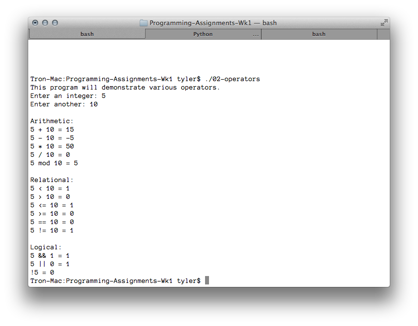

---

layout: default
title: 02-operators

---

{% highlight c++ %}
// Tyler Mumford, 2014
// Assignment 2: Illustrate operators.

#include <stdio.h>
#include <stdbool.h>

int main () {
	int x, y;

	printf("This program will demonstrate various operators.\n");
	printf("Enter an integer: ");
	scanf("%d", &x);
	printf("Enter another: ");
	scanf("%d", &y);

	printf("\nArithmetic:\n");
	printf("%d + %d = %d\n", x, y, x + y);
	printf("%d - %d = %d\n", x, y, x - y);
	printf("%d * %d = %d\n", x, y, x * y);
	if (y != 0) {
		printf("%d / %d = %d\n", x, y, x / y);
		printf("%d mod %d = %d\n", x, y, x % y);
	}
	else {
		printf("Can't divide (or modulo) by zero.\n");
	}

	printf("\nRelational:\n");
	printf("%d < %d = %d\n", x, y, x < y);
	printf("%d > %d = %d\n", x, y, x > y);
	printf("%d <= %d = %d\n", x, y, x <= y);
	printf("%d >= %d = %d\n", x, y, x >= y);
	printf("%d == %d = %d\n", x, y, x == y);
	printf("%d != %d = %d\n", x, y, x != y);

	printf("\nLogical:\n");
	printf("%d && 1 = %d\n", x, x && 1);
	printf("%d || 0 = %d\n", x, x || 0);
	printf("!%d = %d\n", x, !x);

	return 0;
}
{% endhighlight %}


